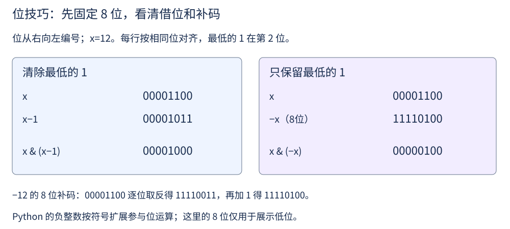

第 27 讲 · 位运算¶
阅读起点：整数、循环、布尔条件；本讲从二进制开始。
首读范围：先做真值表、异或、数1；含负数表示的 lowbit、Single Number II/III 与 32 位加法可第二遍读。
在分析任何算法之前，得先说清"一次操作"到底算什么。我们约定一台抽象机器（word RAM）：
内存是一排编号的格子，每格放一个"字"，通常 64 位。算术、比较、按位运算都算一次操作。
这里把处理一个机器字的位运算与加减法都按 O(1) 计费，不表示它们在真实机器上耗时完全相同。第一次接触位运算时，先把整数想成一排 0、1 开关；“按位”就是把两个整数对齐，每一对开关单独计算。后面先介绍规则，再看这些规则怎样减少搜索或计数。
这一讲会反复用到四种套路：
| 套路 | 典型场景 |
|---|---|
| 利用"抵消"性质 | 找出唯一出现一次的元素 |
| 逐位独立地统计 | 数 1 的个数、批量求 1 的个数 |
| 用掩码表示集合 | 判断两个集合是否相交、枚举子集 |
| 模拟 32 位整数 | 反转位、无进位加法与截断 |
先把二进制和运算符看清¶
十进制 13 是 1×8+1×4+0×2+1×1，写成二进制 1101。从右往左依次是第 0、1、2、3 位，权重分别为 1、2、4、8。
| a 位 | b 位 | a & b 两个都是 1 |
a \| b 至少一个 1 |
a ^ b 两位不同 |
|---|---|---|---|---|
| 0 | 0 | 0 | 0 | 0 |
| 0 | 1 | 0 | 1 | 1 |
| 1 | 0 | 0 | 1 | 1 |
| 1 | 1 | 1 | 1 | 0 |
表中的 &、|、^ 分别叫按位与、按位或、按位异或。这里它们返回计算后的整数，与布尔条件里的 and、or 不是同一个操作；Python 的 ^ 也不是乘方，乘方写 **。
对非负整数，左移一位相当于乘 2，右移一位相当于整除 2；1<<k 只把第 k 位置 1。先按位对齐再计算，例如 1101 & 0110 = 0100。正文数 1 的函数约定 n≥0；Python 负数右移会保留符号，不能直接用 while n 数位。
先看笨办法：逐位检查¶
问题：输入非负整数 n，返回它的二进制表示中有多少个 1。例如 n=13 的二进制是 1101，返回 3；n=0 返回 0。
n & 1 只保留最低位：最低位为 1 就得到 1，否则得到 0。统计它后右移一位，下一轮原来的次低位就来到最低位置。
最直接的做法是一位一位看：
def hamming_weight_naive(n):
count = 0
while n:
count += n & 1 # 看最低位是不是 1
n >>= 1 # 右移一位
return count
答案是对的，但循环次数等于位数（32 位整数最多 32 次）。能不能让循环次数只和"1 的个数"有关？
两个式子：清除，还是取出¶

式子一：
x & (x − 1)清除最低位的那个 1。
选读：补码与 lowbit¶
补码是固定二进制位数下表示有符号整数的方法：最高位为 1 的位模式可解释为一个负数，例如 8 位的 11111111 按无符号读是 255，按补码读是 255−256=−1。固定 8 位时，−x 的补码由“把 x 的 8 位全部翻转，再加 1”得到。12 是 00001100，翻转成 11110011，再加 1 得 11110100。最低那个 1 及其右边的 0 在取负后保持原样，高于它的位置则与原数相反，所以按位与只留下最低那个 1。Python 的按位运算在语义上相当于无限延伸符号位，正数 x 的这个结果仍相同。
式子二：
x & (−x)取出最低位的那个 1（lowbit）。
两个式子长得像，含义不同。首读先掌握清除最低位 1；取出它的 lowbit 用于后面的分组题，读完补码再回来理解：
| 式子 | 作用 | 用在哪 |
|---|---|---|
x & (x-1) |
清除最低位的 1 | 数 1 的个数、判断 2 的幂 |
x & (-x) |
取出最低位的 1 | 按位分组（Single Number III） |
首读：用清除最低位 1 来计数¶
由式子一立刻能推出两件事：循环 while n: n &= n - 1 的执行次数恰好是 1 的个数（这叫 Brian Kernighan 算法，1 越稀疏越快）；而 n > 0 and (n & (n-1)) == 0 就是"n 是 2 的幂"——因为 2 的幂的二进制里只有一个 1，消掉就变成 0。
异或：让成对的东西互相抵消¶
异或有三条性质：
先明确 Single Number 的任务：输入非空整数数组，保证恰有一个数出现一次，其余每种数都出现两次，返回那个只出现一次的值。例如 [4,1,2,1,2] 返回 4；题目已经保证出现次数，不需要我们验证这个前提。
为什么三条性质足够？利用交换律与结合律，可以在分析时把相同值放到一起：4^1^2^1^2=4^(1^1)^(2^2)=4^0^0=4。实际代码无须排序，按任意顺序累计异或就行：
如果改成“一个元素出现一次、其余都出现三次”，任务仍然是返回唯一的那个值，但三份 x 异或后是 x，并没有消掉。下一节因此换用逐位计数。
选读：逐位独立与按位分组¶
Single Number II 的输入保证恰有一个数出现一次，其余每种数都出现三次。例如 [2,2,3,2] 应返回 3。把它们写成二进制 10,10,11,10：最低位共有一个 1，次低位共有四个 1；各自除以 3 取余都为 1，于是答案的两位是 11。
一般地，在任意一位上，出现三次的数要么贡献三个 1，要么贡献零个，模 3 后都消失，剩下的就是唯一数在该位的 0 或 1。代码用 (x>>i)&1 取第 i 位，用 result |= 1<<i 把答案该位置为 1。
本节约定输入都在有符号 32 位范围内，即 −2³¹ 到 2³¹−1；代码先把结果当作 32 位非负位模式。补码解释中，最高位为 1 的模式代表负数，需要减去 2³²。例如 8 位演示中 11111111 当无符号数是 255，按补码解释则是 255−256=−1。
def single_number_ii(nums):
result = 0
for i in range(32): # 一位一位处理
bit_sum = sum((x >> i) & 1 for x in nums)
if bit_sum % 3:
result |= (1 << i) # 这一位属于那个唯一的数
# Python 的负数处理：符号位是 1 时要转回负数
return result if result < (1 << 31) else result - (1 << 32)
这题的思路很有代表性：各个二进制位是彼此独立的。 既然第 i 位上"1 的个数模 3"就能定出答案的第 i 位，那就一位一位地算。时间 O(32n) = O(n)，空间 O(1)。
再改一道题：Single Number III 保证恰有两个不同的值各出现一次，其余每种值出现两次，要求返回这两个值，次序不限。例如 [1,2,1,3,2,5] 返回 [3,5]。先把全部元素异或起来，得到 a ^ b；因为 a ≠ b，这个值必定有某一位是 1。
def single_number_iii(nums):
diff = 0
for x in nums:
diff ^= x # diff = a ^ b
lowbit = diff & (-diff) # 取最低位的 1：这一位上 a 与 b 必然不同
a = b = 0
for x in nums:
if x & lowbit: # 按这一位分成两组
a ^= x
else:
b ^= x
return [a, b]
三步环环相扣：先异或出 a ^ b；lowbit 取出的那一位上 a 与 b 必然不同，于是按这一位分组，a 和 b 一定被分到不同组；每组内部各做一次"找唯一元素"即可。注意成对的元素在该位上取值相同，必然落进同一组，所以每组的性质没有被破坏。
批量统计：一次算出所有数的 1 的个数¶
给一个 n，要求输出 0 到 n 每个数的二进制里 1 的个数。
逐个调用上面的函数是 O(n log n)，但这里可以递推：
def count_bits(n):
ans = [0] * (n + 1)
for i in range(1, n + 1):
ans[i] = ans[i >> 1] + (i & 1) # 右移一位的答案 + 最低位
return ans
另一个等价、且更"位运算"的写法是借式子一：
def count_bits_alt(n):
ans = [0] * (n + 1)
for i in range(1, n + 1):
ans[i] = ans[i & (i - 1)] + 1 # 消掉一个 1 之后的数量，再加回这一个
return ans
两个递推式都要能解释：前者是"右移一位 + 看最低位"，后者是"消掉最低位的 1 再加 1"。
反转位与丢失的数字¶
颠倒二进制位¶
输入 0≤n<2³²，把它写成固定 32 位二进制串（不足补前导零），左右反转后，返回新位串表示的非负整数。例如 n=1 只有最右边一位为 1，反转后该位到最左，返回 2³¹；这与反转十进制数字不同。
代码每轮取出输入的最低位，把已构造的结果左移腾出一格，再用按位或把这一位放进去。恰好做 32 次，才能连前导的 0 一起搬过去：
def reverse_bits(n):
result = 0
for _ in range(32): # 必须固定 32 次
result = (result << 1) | (n & 1) # 结果左移腾出最低位，填入 n 的最低位
n >>= 1
return result
"结果左移"配合"输入右移"，合起来就是颠倒——这是理解这题最省力的方式。固定 32 次是为了保留输入的前导零：用 8 位缩小示例，00000001 应反转为 10000000；若 while n 只处理 1 次，就只得到 1。Python 非负整数反复右移会变成 0；负数会保留符号，是另一项注意事项。这是 Python 做位运算题最典型的坑。
丢失的数字¶
输入长 n 的数组 nums，元素两两不同且来自 0..n，因此恰好缺少一个数，返回缺少的值。例如 [3,0,1] 长度为 3，完整范围是 0、1、2、3，缺少 2。
把完整范围的所有数与实际数组的所有数一起异或：已出现的值各有两份，会抵消；缺少的值只有完整范围中的那一份，因而留下。循环下标刚好提供 0..n−1，初始化时再补上 n：
def missing_number(nums):
result = len(nums) # n 本身也要参与进来
for i, x in enumerate(nums):
result ^= i ^ x # 下标与值一起异或
return result
两种思路都要会：异或（不涉及溢出）与求和（n(n+1)/2 − sum(nums)，在 C++/Java 里要留意溢出）。这一题是"数组与完整序列互相抵消"，而 Single Number 是"数组内部两两抵消"——同一个性质的两个方向。
不用加号做加法¶
输入两个有符号 32 位整数 a、b，要求用位运算模拟它们的和，例如 get_sum(3,5)=8、get_sum(−1,1)=0。下面实现按 32 位补码计算；超出范围时保留低 32 位，再解释为有符号整数。
先看一列二进制加法：0+0 的本位为 0，0+1 或 1+0 的本位为 1，1+1 的本位为 0 并向左进 1。因此本位结果正好是异或 a^b，进位位置正好是 a&b，再左移一位。把两部分继续按同样规则合并，直到没有进位。
MASK=0xFFFFFFFF 是十六进制写法，表示低 32 位全为 1。与 MASK 按位与，会保留低 32 位、丢弃更高位，模拟固定字长。
def get_sum(a, b):
MASK = 0xFFFFFFFF
a, b = a & MASK, b & MASK # 先限制在 32 位内
while b:
carry = ((a & b) << 1) & MASK # 进位
a = (a ^ b) & MASK # 无进位和
b = carry
return a if a < (1 << 31) else a - (1 << 32)
先把两个加数按位对齐：对照二进制加法的真值表，a ^ b 恰好是"不进位的和"，(a & b) << 1 恰好是"进位"。反复迭代到进位为 0。这是先分开计算本位和与进位的做法；下一轮再把进位加回，直到不再产生进位。
用a=3（二进制011）、b=5（101）手算：无进位和110，进位010；再算110与010，无进位和100、进位100；最后100与100得到无进位和000、进位1000；再与0合并为1000=8。进位向高位移动，不能只计算一轮XOR就返回。
这段代码把输入和中间值按32位截断，最终按32位有符号数解释；因此讨论的是模2³²加法。若真实数学和溢出32位，返回的是截断值，不是Python无限精度的和。
为什么需要 MASK？ 因为 Python 的整数没有固定 32 位截断；例如负数参与这套加法时，进位可能不断向更高位传播，使循环无法结束。用掩码把结果截在 32 位，最后再把符号位解释回 Python 的负数。
用位掩码当集合¶
任务是：给一个只含小写英文字母的单词列表，选两个不同位置的单词，要求二者没有任何公共字母，返回长度乘积的最大值；没有符合的一对则返回 0。例如 ["ab","cd","a"] 最好选 ab 与 cd，结果为 4；ab 与 a 不能配对。
每个单词是否出现 a、b、…、z，可以存成 26 个布尔值，也可以用一个整数的第 0..25 位表示。比如 ab 的掩码为二进制 11，ac 为 101，两者按位与得到 1，表示都含 a；ab 与 cd 的掩码相与为 0，表示没有公共字母。同一字母出现多次只重复置 1，不影响集合。
代码先为每个词建立掩码，再枚举不同词对，只有掩码相与为 0 才比较长度乘积：
def max_product(words):
"""求两个不含公共字母的单词的最大长度乘积"""
masks = []
for w in words:
mask = 0
for c in w:
mask |= 1 << (ord(c) - ord('a')) # 第 i 位表示字母 i 出现过
masks.append(mask)
best = 0
for i in range(len(words)):
for j in range(i + 1, len(words)):
if (masks[i] & masks[j]) == 0: # 没有公共字母
best = max(best, len(words[i]) * len(words[j]))
return best
把整数当集合用，判断两个集合是否相交就从"遍历 26 个字母"变成一次按位与。 字符种类固定且较少时，位掩码常更紧凑；是否更快要看操作与实现，不能由种类≤64直接断言。
三段证明¶
命题一：x & (x−1) 消掉最低位的那个 1。 设 x 的最低位的 1 在第 k 位（第 0..k−1 位都是 0，第 k 位是 1）。那么 x − 1 会在第 k 位借位：第 k 位变 0、第 0..k−1 位全变 1，第 k 位以上不变。所以 x & (x−1) 在第 k 位及以下全为 0，高位与 x 相同——正好把最低位那个 1 抹成 0，别的位没动。∎
命题二：异或能找出唯一元素。 把数组记为 a₁, …, aₙ，除了 x 每个元素出现两次。由交换律与结合律把相同的元素两两配对：
所以结果就是 x。∎
命题三（选读）：lowbit 分组能把 a 和 b 分开。 设 diff = a ^ b，lowbit = diff & (−diff) 是 diff 中最低位的 1。由异或的定义，diff 第 k 位为 1 ⟺ a 与 b 的第 k 位不同。所以 a、b 在 lowbit 代表的这一位上取值不同，按这一位分组必然落到不同组。而其他元素成对出现，同一对在该位上取值相同，必然落进同一组——于是每组内部仍是"一个唯一的元素 + 若干对"，用命题二即可求出。∎
复杂度与几个手算的例子¶
| 题目 | 关键技巧 | 时间 | 空间 |
|---|---|---|---|
| Number of 1 Bits | n & (n-1) |
O(k)（k 为 1 的个数） |
O(1) |
| Single Number | 异或抵消 | O(n) |
O(1) |
| Single Number II | 逐位统计模 3 | O(32n) = O(n) |
O(1) |
| Single Number III | 异或 + lowbit 分组 | O(n) |
O(1) |
| Counting Bits | 递推 | O(n) |
O(n)（输出） |
| Reverse Bits | 逐位搬移 | O(1)（固定 32 次） | O(1) |
| Missing Number | 异或 或 求和 | O(n) |
O(1) |
| Sum of Two Integers | ^ 与 & << 1 |
O(1)（≤ 32 轮） | O(1) |
| Reverse Integer（延伸，见题库） | 取模构造 | O(log x) |
O(1) |
| Maximum Product of Word Lengths | 位掩码当集合 | O(n² + 总字符数) |
O(n) |
数 1 的个数：n = 11（二进制 1011）。
只出现一次的数字：nums = [4,1,2,1,2]。
只出现一次的数字 III：nums = [1,2,1,3,2,5]（答案 3 与 5）。
diff = 1^2^1^3^2^5 = 3 ^ 5 = 6 （二进制 110）
lowbit = 6 & (−6) = 2 （二进制 010）
按第 1 位分组：
该位为 1 的：2(10), 3(11), 2(10) → 异或得 3
该位为 0 的：1(01), 1(01), 5(101) → 异或得 5
答案 [3, 5]
比特位计数：n = 5
| i | 二进制 | i>>1 | ans[i>>1] | i&1 | ans[i] |
|---|---|---|---|---|---|
| 0 | 0 | — | — | — | 0 |
| 1 | 1 | 0 | 0 | 1 | 1 |
| 2 | 10 | 1 | 1 | 0 | 1 |
| 3 | 11 | 1 | 1 | 1 | 2 |
| 4 | 100 | 2 | 1 | 0 | 1 |
| 5 | 101 | 2 | 1 | 1 | 2 |
结果 [0,1,1,2,1,2]。
Python 里做位运算特有的坑¶
- 运算符优先级。Python 中按位
&的优先级高于==，因此下面两句等价；加括号有助阅读，并非修复错误：
可对照 Python 运算符优先级。不要把其他语言的优先级规则直接搬过来。
-
x & (x-1)与x & (-x)弄混。前者清除，后者取出。 -
判断 2 的幂时忘了排除
n <= 0。0 & (−1) == 0也成立，但 0 不是 2 的幂。 -
忘记 32 位掩码。Python 的负数会"无限延伸"，左移会让它越来越长。
-
以为位运算一定更快。现代 CPU 上很多简单循环已经优化得很好；在固定 26 字母场景，O(26) 本来就是 O(1)，主要可能优化常数；若集合跨多个机器字，按位与也要按字数计费。
它在题库里长什么样¶
| 题目 | 关键技巧 |
|---|---|
| Single Number | 异或抵消 |
| Number of 1 Bits | n & (n-1) |
| Counting Bits | 递推 |
| Reverse Bits | 逐位搬移 + 掩码 |
| Missing Number | 异或 或 求和 |
| Sum of Two Integers | ^ 与 & << 1 |
| Reverse Integer（延伸） | 反转十进制数位并检查是否超出 32 位范围，具体实现见题库 |
| Single Number II（137） | 逐位统计模 3 |
| Single Number III（260） | 异或 + lowbit 分组 |
| Power of Two（231） | n & (n-1) |
| Hamming Distance（461） | 异或之后数 1 |
| Maximum Product of Word Lengths（318） | 位掩码当集合 |
| Maximum XOR of Two Numbers（421） | 二进制 Trie（学完本讲后回读第 13 讲选读） |
从讲义走到代码¶
权限或功能开关可用位集合保存，每一位对应一种明确的“有或无”。
先手算 5^5=0、5^0=5，再做 Single Number，用 [4,1,2,1,2] 检查返回 4。接着做 Number of 1 Bits：11 的位模式 1011，应循环清除三次。
再练反转位：8 位的 00000001 应反转成 10000000，32 位题则固定处理 32 轮。做加法模拟时测试 get_sum(−1,1)=0，并解释掩码截断的是哪 32 位。
练习¶
1. word RAM 模型假设"x & y、x << k、x + y 都是 O(1)"。这个假设什么时候会失效？
当"字长"本身随问题规模增长时会失效。比如大整数运算（第 26 讲），一个数可能横跨很多个机器字，这时 x + y 是 O(位数)；位运算作用在超过一个字长的对象上时也一样，得按位数计费。word RAM 模型隐含的前提是"参与运算的数装得进一个机器字"。 这正是"两个 n 位数相乘"要单独做一套复杂度分析的原因。
2. 证明 x & (x−1) == 0 当且仅当 x 是 2 的幂（或 x = 0）。
若 x 是 2 的幂，二进制里只有一个 1，由命题一消掉后为 0。反之，若 x & (x-1) == 0 且 x > 0，说明消掉最低位的 1 之后 x 变成 0，即原本只有一个 1——那就是 2 的幂。x = 0 时 0 & (−1) == 0 也成立，所以判断时必须补上 x > 0。∎
3. 为什么"逐位统计模 3"能解决 Single Number II，而异或不行？
异或的抵消性质是 a ^ a = 0，只对出现偶数次的情况有效；出现三次时 a ^ a ^ a = a，不抵消。逐位统计利用的是"每一位上 1 的个数模 3"：出现三次的元素在该位贡献 3 个 1（模 3 为 0），只留下唯一元素那一个。差别在于：异或要求"成对"，逐位统计只要求"贡献能被模掉"。
4. 实现 hamming_weight(n)（两种写法）与 is_power_of_two(n)。
两种写法见上文（逐位检查、n & (n-1)）；2 的幂判据是 n > 0 and (n & (n-1)) == 0。
5. 实现 get_sum(a, b)，并解释为什么需要 MASK。
见上文。Python 的按位语义相当于无限延伸符号位，负数参与时进位可能不断向高位传播；掩码把结果限制在 32 位，最后再把符号位解释回来。
6. 实现 max_product(words)，并说明位掩码比哈希集合快在哪。
见上文。固定字母表下，两种判交本来都是 O(1)；位掩码把多个字符检查合并为一次字运算，因为 26 个字母的"在或不在"被压进了一个整数里，一次运算就能全部比完。
7. 给定由 n 个不同元素组成的列表 items，返回所有子集，包括空集与全集。例如 ["a","b"] 的结果包含 []、["a"]、["b"]、["a","b"]。用一个 n 位整数表示选择：第 i 位为 1 就选 items[i]，为 0 就不选。
每位有两种选择，共 2ⁿ 种，恰好对应整数 0..2ⁿ−1。逐个整数检查各位，就能不重不漏地枚举全部子集：
def all_subsets(items):
n = len(items)
res = []
for mask in range(1 << n): # 0 到 2^n − 1
subset = [items[i] for i in range(n) if mask >> i & 1]
res.append(subset)
return res
复杂度 O(n · 2ⁿ)（每个子集要花 O(n) 构造）。这是"用整数表示集合"最经典的应用，也是回溯枚举子集的另一种写法。
8.（选读） 理解整数掩码：求绝对值，并解释用比较结果构造 max 的公式。
对 32 位整数，令 mask = x >> 31（负数时为 −1，非负时为 0），则 abs(x) = (x ^ mask) - mask；下面的最大值公式仍使用 <，不满足“完全不用比较”的额外限制： max(a,b) = a ^ ((a ^ b) & -(a < b))——把布尔值转成 0 或 −1 当掩码用。
9.（选读） 给定至少含两个非负整数的数组，选两个不同位置，返回它们异或的最大值，例如 [2,5] 返回 7。为什么既可以用二进制 Trie，也可以用逐位贪心加哈希？
读完本讲后，回读第 13 讲末尾的二进制 Trie 选读即可接上这一题：沿着树优先走"相反的位"。前缀集合加逐位贪心则是维护"当前能取到的最大异或前缀 ans"，对每一位试着问"集合里是否存在 p 与 p ^ candidate"，可行就把这一位定下来。两者复杂度都是 O(n · 位数)，面试里讲清任一种即可。